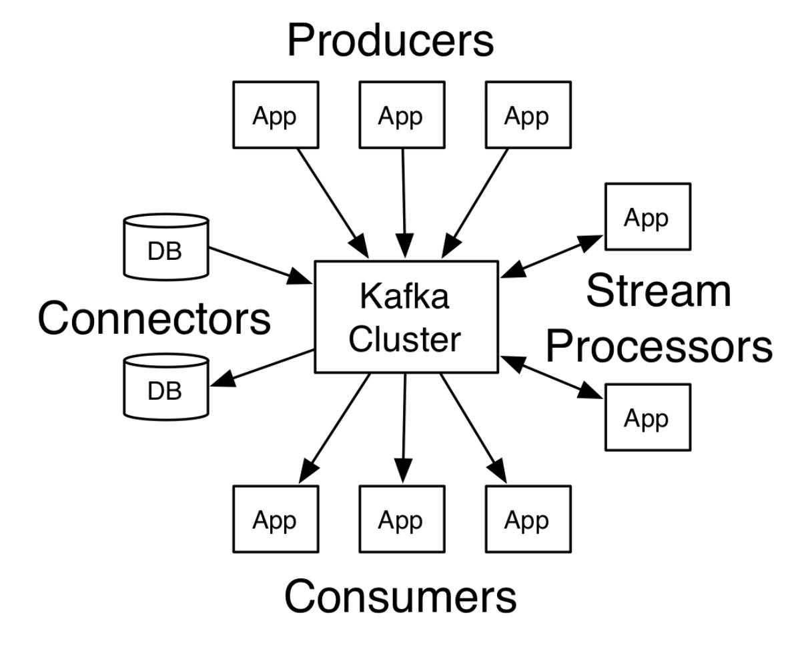

简介
Kafka是一个分布式的流处理平台：
- 发布和订阅数据流，类似于消息队列或者企业消息系统
- 容错方式存储数据流
- 数据流到即处理
Kafka主要用于以下两种类型的应用：
- 建立从系统或者应用中获取可靠实时的数据流管道
- 建立转换数据流的实时流应用
Kafka有以下4个核心API：
- Producer API发布一个数据流到一个或多个Kafka topic。
- Consumer API订阅一个或多个topic，并且处理topic中的数据。
- Streams API作为一个流处理器，消费来自一个或多个topic的输入流，同时产生输出流到一个或多个topic。
- Connector API建立运行一个可复用的生产者或者消费者用来连接存在于应用或者数据系统中的topics。

本文主要从源码的角度解析一下Producer。
Producer
Producer发布数据到指定的topics。Producer主要负责数据被分发到对应topic的哪个分区。最简单的负载均衡是通过轮询来进行分区，也可以通过其他的分区函数(根据数据中的key等)。
下面的代码是通过KafkaTemplate模版建立的一个kafka实例，然后调用了send方法把消息发送到”abc123”这个topic上去。
1 |
|
其内部实现主要是依靠doSend方法。首先进来判断是否设置了支持事务，接着获取了一个producer实例，然后调用其send方法。在send的回调结束后调用了closeProducer方法来关闭producer。
1 | protected ListenableFuture<SendResult<K, V>> doSend(final ProducerRecord<K, V> producerRecord) { |
producer中的doSend方法实现异步发送数据到topic。
- 确认topic的元数据是可用的，并设置等待超时时间。
- 序列化record的key，topic和header。
- 序列化record的value，topic，header。
- 设置record的分区。这边如果在最开始传入时设置了分区，就用设置的分区，如果没有，就用轮询的方式计算。
- 检查序列化后要传输的record是否超过限制；
- 把前面设置好的分区、序列化的key，value、超时时间、header等参数放入到累加器中。
- 如果返回的结果显示批队列已经满了或者新建立了一个批队列，那么就唤醒这个sender发送数据。
- 返回result的future给上层。
1 | private Future<RecordMetadata> doSend(ProducerRecord<K, V> record, Callback callback) { |
RecordAccumulator中的append方法用于把record添加到累加器中，并返回累加的结果。
首先它检查是否有一个在处理的batch。如果有，直接尝试增加序列化后的record到累加器中。如果没有，则创建一个带有缓冲区的新的batch，然后尝试增加序列化后的record到batch中的缓冲区内，接着增加batch到队列中。最终返回累加的结果。
1 | public RecordAppendResult append(TopicPartition tp, |
真正发送record到集群的的类是Sender类，它是一个bachground thread。它在run方法中调用sendProducerData方法。
而sendProducerData方法做了以下事情：
- 从累加器中获取可以准备发送的record
- 如果有任何分区的leader还不知道，强制元数据更新
- 移除还没有准备好发送的节点
- 创建一个request请求用于发送batch
- 对于过期的batch进行reset producer id
- 发送batch request
1 | private long sendProducerData(long now) { |
总结
本文简单介绍了Kafka的基本情况，包含Producer、Consumer、Streams、Connector4个API。接着从源码入手分析了Producer发送数据到集群的过程，其主要是把数据放入缓冲，然后再从缓冲区发送数据。